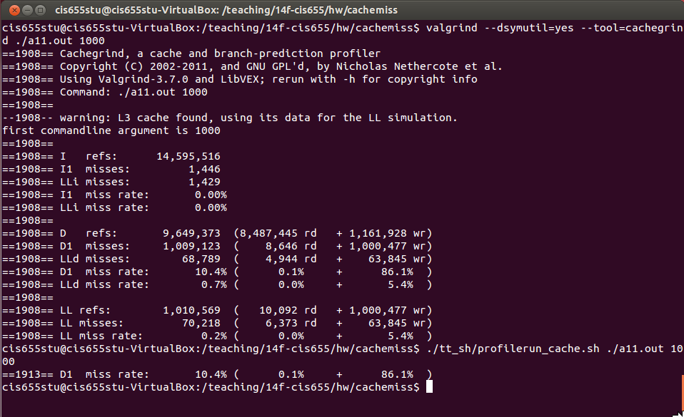

Programming Homework
The homework is to optimize computer program for matrix computations in terms of cache miss rate.
A.Simple matrix traversal [30 points]
A.1 Set up the system
1.Copy the following code to a file a11.cpp
#include<iostream>
using namespace std;
int string2int(const string & cppString){
const char* cstring = cppString.c_str();
int i = atoi(cstring);
return i;
}
int main(int argc, char *argv[]){
if(argc != 1 + 1){ //non argument case: argc = 1
cerr << "format: ./a.out datasize" << endl;
cerr << "example: ./a.out 1000" << endl;
return 0;
}
cout << "first commandline argument is " << argv[1] << endl;
long datasize = string2int(argv[1]);
int * array = new int[datasize*datasize];
for (long i = 0; i < datasize; i++){
for (long j = 0; j < datasize; j++){
array[j*datasize+i] = i;
}
}
delete[] array;
}
2.Compile a11.cpp using the following command.
g++ -std=c++0x -O0 a11.cpp -o a11.out
3.Run a11.cpp by
./a11.out 1000
4.Measure the performance, and capture the cache miss rate. Specifically, we need to capture the miss rate of D1, that is, the L1 data cache.
While you can use your favorable profiler to do cache profiling, I recommend to use Valgrind [Cachegrind].
I have set up Valgrind on a VirtualBox image which can be downloaded from Blackboard.
You should set up VirtualBox by downloading it from Oracle website [link]; You should choose installation file based on your local OS. Once you install VirtualBox successfully, you can download the image and launch an Ubuntu instance. On Ubuntu, you can find a11.cpp on /programming/cachemiss/, and compile it to a11.out. Then follow the instructions below to run the program while measuring D1 miss rate.
cd /programming/cachemiss/
./tt_sh/profilerun_cache.sh ./a11.out 10000
After running the command, you should be able to see something similar to the screen-shot below, from which you can find the D1 miss rate (e.g. 10.4% in the following screen-shot). Make note of the miss rate on your machine.

A.2 Optimize the program
Optimize the program by applying the idea of "Loop Interchange" as discussed in the class meeting. Save the optimized program to a10.cpp and repeat the same process (for compiling, execution, and measurement).
A.3 Deliverable
You should make a zip file containing:
- The cache miss rate of running
a11.outon your system. - Your optimized program (source code!):
a10.cpp. - The cache miss rate of running
a10.outon your system.
And then submit the zip file to Blackboard.
B. Matrix transpose [70 points]
Matrix transpose is an operation that interchanges matrix rows and columns; the idea is illustrated in the pseudo code below:
for(i = 0; i < 3; i++){
for(j = 0; j < 3; j++){
output[j][i] = input[i][j];
}
}
B.1 Basic implementation
This part requires you to implement a program for matrix transpose. First provide a basic implementation based on code snippet above, run the program with a 2000*2000 matrix and measure the D1 miss rate as described before.
B.2 Optimization
Then, optimize your implementation using the "blocking" idea discussed in the class. Re-run the program with a 2000*2000 matrix.
Vary the value of blocking factor and measure the cache miss rates accordingly. Report the relationship between the configured blocking factor and cache miss rate, and study the "optimal" value of blocking factor.
B.3 Deliverable
You should make a zip file containing:
- Your basic implementation for matrix transpose (i.e. the compilable source code!).
- The cache miss rate of running basic matrix-transpose program on your system.
- Your optimized program (i.e. the compilable source code!).
- The cache miss rate of running optimized matrix-transpose program on your system. Here, you should include a series of (instead of just one) values for measured cache miss rates, under different setting of blocking factor. Report the optimal value of blocking factor that achieves the minimal miss rate.
- The zip file from
A.3
And then submit the zip file to Blackboard.
© Yuzhe Tang, 2015